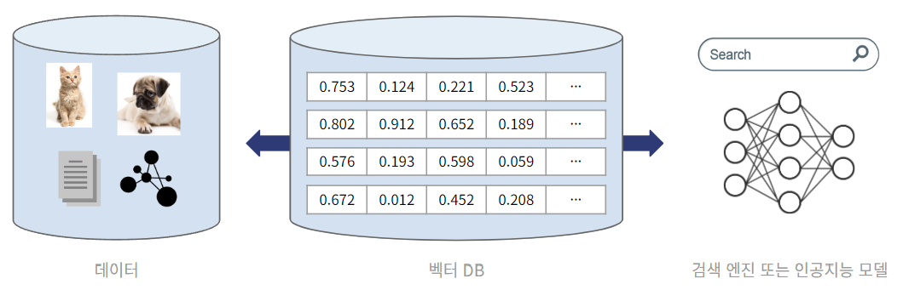
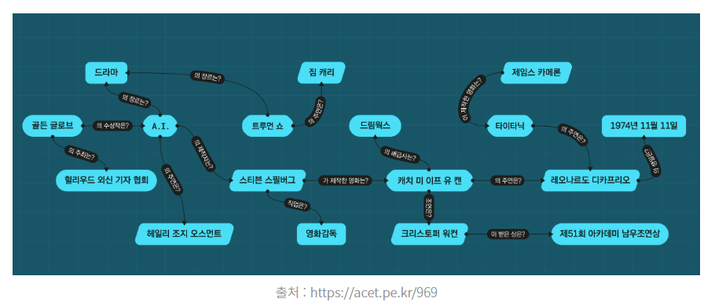
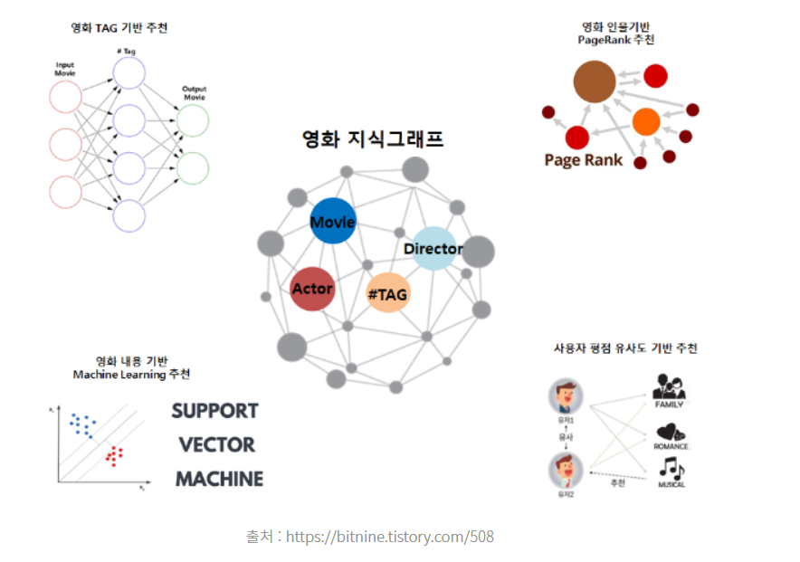
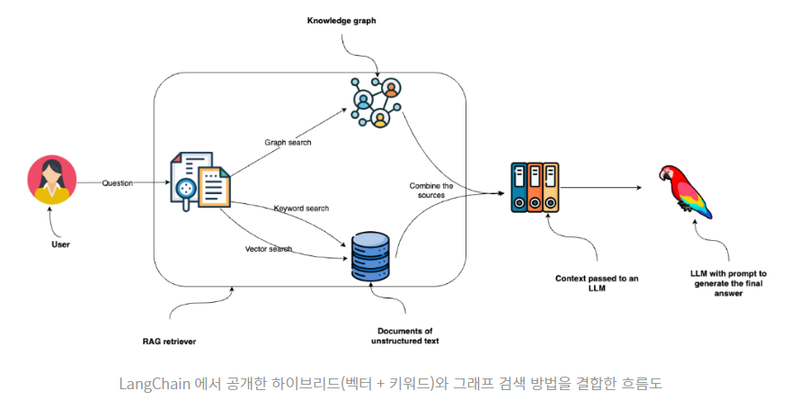
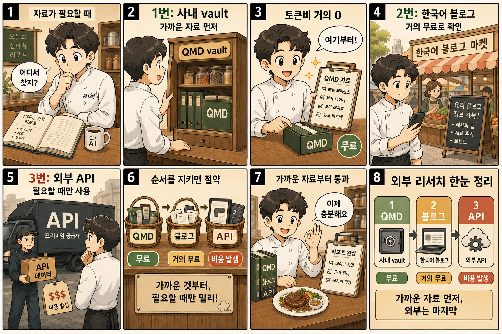

먼저 각자 정한 주제로 gstack 47 스킬을 셋업·테스트. 그 위에 임베딩 시스템 · GraphRAG · 크론잡 자동 인덱싱 · 모든 문서 마크다운화를 차례로 얹습니다.
도입부 보강 | Day 2 끝에 각자 정한 주제로 gstack 47 스킬(Copilot 호환)을 설치하고 본인 주제에 맞는 스킬 셋업·테스트를 진행합니다.
/cso) + QA·브라우저(/qa·/browse·/setup-browser-cookies) 실 시연. 이동 →설치 명령 단 2줄. 환경별 동일:
mkdir -p ~/.copilot/skills
git clone https://github.com/garrytan/gstack \ ~/.copilot/skills/gstack
copilot skill gstack /qa
New-Item -ItemType Directory ` -Path "$env:USERPROFILE\.copilot\skills" -Force
git clone https://github.com/garrytan/gstack ` "$env:USERPROFILE\.copilot\skills\gstack"
(참고) 강사 시연은 Claude Code 환경 ~/.claude/skills/gstack에 동일하게 설치되어 있습니다. 명령 흐름은 양쪽 같음.
호환성 | Claude Code ✅ · Copilot CLI(Claude 선택) ✅ · GPT · Gemini ❌. gstack은 Claude 기반으로 만들어져 다른 모델에선 스킬이 인식되지 않습니다.
| 스킬 | 언제 · 무엇 |
|---|---|
office-hours | 회의 형식 멘토링 | 코드/설계 질의응답 |
autoplan | 아이디어 → 자동 계획 수립 (4관점 합의) |
plan-ceo-review | 비즈니스 시각 | ROI · 우선순위 |
plan-eng-review | 엔지니어 시각 | 실행 가능성 · 위험 |
plan-design-review | 디자인 시각 | UX · 일관성 |
plan-devex-review | 개발자 경험 시각 | 도구 · 마찰 |
plan-tune | 리뷰 결과 반영 계획 조정 |
| 스킬 | 언제 · 무엇 |
|---|---|
design-consultation | 디자인 요구사항 인터뷰 → 시안 도출 |
design-shotgun | 여러 디자인안 동시 생성 (병렬) |
design-html | HTML/CSS 디자인 즉시 시안화 |
design-review | 디자이너 시선 | 시각적 일관성·계층 |
| 스킬 | 언제 · 무엇 |
|---|---|
review | PR 코드 리뷰 | 변경 사항 종합 검토 |
ship | 배포 흐름 자동화 (검증 → 배포) |
land-and-deploy | 머지 + 배포 통합 워크플로우 |
codex | OpenAI Codex 호출 (3 모드 | review/challenge/consult) |
careful | 위험 명령 자동 차단 (rm -rf · DROP · force-push) |
claude | Claude 내부 호출 (다른 환경에서 Claude 실행) |
| 스킬 | 언제 · 무엇 |
|---|---|
qa | 대화형 QA 시나리오 실행 | 발견 시 자동 fix-verify 루프 |
qa-only | QA 보고만 | 코드 수정 없음 |
canary | 점진적 배포 검증 (소규모 트래픽 시뮬) |
benchmark | 성능 벤치마크 실행 |
benchmark-models | AI 모델 간 성능 비교 |
| 스킬 | 언제 · 무엇 |
|---|---|
browse | 헤드리스 QA | 자동 클릭 · 폼 입력 · 스크린샷 |
connect-chrome | 가시적 Chromium 실행 | 실시간 인터랙션 |
open-gstack-browser | gstack 전용 브라우저 런처 |
setup-browser-cookies | 로그인 세션 저장 + 복제 (인증 후 작업 지속) |
scrape | 웹 페이지 데이터 수집 (구조화) |
| 스킬 | 언제 · 무엇 |
|---|---|
cso | 보안 감사 | 인증·권한·입력 검증·의존성 CVE 종합 |
health | 시스템·repo 건전성 종합 진단 |
| 스킬 | 언제 · 무엇 |
|---|---|
setup-deploy | 배포 환경 초기 세팅 (CI/CD · 호스팅) |
gstack-upgrade | gstack 자체 버전 업그레이드 |
document-release | 릴리스 노트 자동 작성 |
| 스킬 | 언제 · 무엇 |
|---|---|
investigate | 딥다이브 root cause 추적 (복잡한 버그) |
landing-report | 배포 후 결과 리포트 (이슈·메트릭) |
| 스킬 | 언제 · 무엇 |
|---|---|
retro | 주간 엔지니어링 회고 + 트렌드 분석 |
learn | 실수·교훈 → 1줄 룰로 영구 박지 |
| 스킬 | 언제 · 무엇 |
|---|---|
setup-gbrain | gbrain (개인 지식 그래프) 초기 세팅 |
sync-gbrain | gbrain 동기화 | 새 노트 인덱싱 |
context-save | 현재 세션 컨텍스트 저장 |
context-restore | 저장된 컨텍스트 복원 | 세션 이어가기 |
| 스킬 | 언제 · 무엇 |
|---|---|
freeze | 작업 디렉토리 범위 제한 | 다른 폴더 수정 금지 |
unfreeze | freeze 해제 |
guard | careful + freeze 통합 안전 모드 |
| 스킬 | 언제 · 무엇 |
|---|---|
make-pdf | 마크다운/HTML → PDF 생성 |
skillify | 반복 작업을 새 스킬로 자동 변환 |
pair-agent | 두 번째 에이전트와 페어 코딩 |
Day 2 끝에 정한 본인 주제로 gstack 카테고리를 순서대로 한 번씩 통과. 각 단계에서 핵심 스킬 1개를 직접 호출해보고, 산출물을 다음 단계로 넘기는 흐름.
| 단계 | 카테고리 | 핵심 스킬 | 본인 주제 적용 예 |
|---|---|---|---|
| ① PLAN | 기획/리뷰 | autoplan + plan-eng-review | 본인 주제 계획 자동 수립 → 엔지니어 시각 검토 |
| ② DESIGN | 디자인 | design-consultation | UI·구조 설계 인터뷰 → 시안 도출 |
| ③ REVIEW | 코딩 | review 또는 codex | 로컬 git diff 기반 pre-landing 리뷰 (GitHub PR API X) · codex는 다른 AI 시각 |
| ④ QA | QA·브라우저 | qa + browse | 기능 검증 + 헤드리스 브라우저 자동 QA |
| ⑤ SECURITY | 보안/감사 | cso + health | OWASP Top 10 · 의존성 CVE · 건전성 종합 | Day 2 미완료 보안 실습 |
| ⑥ SHIP | 배포 | ship 또는 land-and-deploy | 검증 → 배포 자동화 |
| ⑦ RETRO | 회고 | retro + learn | 이번 사이클 패턴 추출 → 1줄 룰로 저장 |
각 단계 ~3분. 본인 주제가 작아도 OK | 카테고리 흐름을 한 사이클 체험하는 게 목적. 깊이는 다음 차시부터.
browse 명령이 어떻게 흘러가는지 (QA 표준 데모 사이트)이건 실습 주제가 아니라 도구 작동 학습용입니다. 공개 QA 표준 데모(the-internet.herokuapp.com) + 가짜 자격증명(tomsmith / SuperSecretPassword!)으로 browse 5단계 흐름이 어떻게 작동하는지 한 번 따라보세요.
자연어 프롬프트 예시 (Copilot CLI · 권장):
"the-internet.herokuapp.com/login 페이지에서 tomsmith / SuperSecretPassword! 로 로그인하고 결과 페이지를 /tmp/login-success.png에 캡처해줘"
5단계 흐름 | 각 명령이 하는 일:
goto URL | 헤드리스 브라우저로 페이지 이동snapshot -i | 페이지의 모든 인터랙티브 요소를 @e1, @e2... 식별자로 자동 탐지·매핑fill @id "값" | 식별자에 해당하는 input·textarea에 값 입력click @id | 버튼·링크 클릭 + 페이지 전환 자동 대기screenshot path | 현재 화면 캡처 (검증·증거 보존)B="$HOME/.copilot/skills/gstack/browse/dist/browse" # 1. 사이트 이동 | 헤드리스 브라우저 페이지 로드 $B goto https://the-internet.herokuapp.com/login # 2. 페이지 스냅샷 | 로그인 폼 요소 자동 탐지 (@username · @password · @submit 매핑) $B snapshot -i # 3. 폼 입력 | 식별자로 input에 값 채우기 $B fill @username "tomsmith" $B fill @password "SuperSecretPassword!" # 4. 버튼 클릭 | 페이지 전환 자동 대기 (네트워크 idle까지) $B click @submit # 5. 캡처 | 결과 페이지 스크린샷 (검증 증거) $B screenshot /tmp/login-success.png # 결과: ✅ /login → /secure 정상 이동 # ✅ "You logged into a secure area!" 메시지 확인
본인 주제에 적용 시 | 위 5단계 흐름은 그대로 두고 URL(goto ...) + 셀렉터 이름(@username 등)만 본인 환경에 맞게 교체. snapshot -i는 어떤 사이트에서든 자동으로 식별자를 만들어주니, 처음 한 번 출력 확인해서 어떤 id가 어떤 요소인지 파악하면 됩니다.
Q00/ouroboros · Agent OS · 한국어 README 제공. 4단계 진화 루프 (Interview → Seed → Execute → Evaluate)를 따라가는 20개 명령. gstack 표처럼 단계별 매핑:
| 단계 | 핵심 명령 | 역할 |
|---|---|---|
| 설정 (초기) | setup · welcome · tutorial | 초기 셋업 + 첫 사용 가이드 |
| ① Interview | interview | Socratic 질문 반복 (모호함 ≤ 0.2까지 정련) |
| ② Seed | seed · publish | 명세 생성 · Seed → GitHub Issue 자동 변환 |
| ③ Execute | run · auto · ralph · brownfield | 실행 (auto=자율 / ralph=무한 루프 / brownfield=기존 코드 진입) |
| ④ Evaluate | evaluate · qa · pm | 평가 + QA + 프로젝트 매니저 시각 검토 |
| 진화 루프 | evolve | 다음 사이클 명세로 평가 결과 피드백 |
| 운영 | status · unstuck · resume-session · cancel · update · help | 상태·막힘 해소·세션 이어가기·취소·업데이트·도움말 |
매일 AI 작업 토큰비 ~70%↓. 두 도구는 방향이 다름:
| 도구 | 절감 방향 | 호환 |
|---|---|---|
| 🪨 Caveman | 출력 토큰 65~75%↓ (AI 답변을 짧게) | Claude Code · Codex |
| ⚡ RTK | 입력 토큰 60~90%↓ (dev 명령 결과 hook 자동 압축) | Claude Code 전용 |
세션 간 작업·교훈 누적 | 2 스킬 (retro는 gstack에 이미 있음 | §3 ⑦ 단계 참조):
| 스킬 | 역할 | 호출 |
|---|---|---|
session-handoff | 세션 종료 시 다음 세션용 핸드오프 메모 저장 | /session-handoff |
learn-rule | 실수·교훈 1줄 룰로 저장 | /learn-rule |
설치 (Copilot CLI · Claude Code 동등):
git clone https://github.com/daniel8824-del/claude-session-memory-kit ~/tmp/csmk
cp -r ~/tmp/csmk/{session-handoff,learn-rule} ~/.copilot/skills/
메모리 저장 폴더는 본인이 원하는 위치로 | CLI에 자연어로 요청하면 AI가 환경변수 등록:
"메모리 저장 폴더를 ~/notes/memory로 설정해줘"
qmd search · qmd query로 검색 동작 확인. (본인 폴더가 없으면 즉석에서 빈 폴더 하나 만들어 시연)임베딩 = 텍스트를 의미가 비슷하면 가까운 숫자 벡터로. 본인 노트 N개 미리 임베딩 → 질문도 임베딩 → 가장 가까운 노트 찾기. 끝.

QMD는 Tobias Lütke의 오픈소스 도구. SQLite + 로컬 임베딩 + BM25/벡터/하이브리드 검색. 자세히는 github.com/tobi/qmd.
QMD vs 일반 리트리버 (LangChain · LlamaIndex 등):
| 항목 | 일반 리트리버 | QMD |
|---|---|---|
| 임베딩 모델 | OpenAI · HuggingFace · 로컬 직접 wire | bge-m3 로컬 기본 내장 |
| 벡터 DB | Chroma · Qdrant · Pinecone 별도 구성 | SQLite 단일 파일 |
| 하이브리드 검색 | retriever 클래스 직접 조립 + reranker wire | qmd query 1줄 |
| 외부 API · 비용 | 임베딩 호출비 + 벡터 DB 호스팅비 | 0건 · 0원 (전부 로컬) |
| 주 용도 | RAG 앱 빌드용 범용 인프라 | 본인 노트 · 로컬 vault 검색 |
→ RAG 앱을 만든다면 일반 리트리버 부품 조립 | 본인 노트만 검색한다면 QMD 1개로 끝. QMD는 일반 프레임워크가 제공하는 하이브리드 리트리버 + 자동 reranker + 로컬 임베딩을 박스 밖 1줄로 묶어 놓음 (강의 시연용 선택 이유).
"https://github.com/tobi/qmd 이 QMD 설치해줘. Windows 환경이야." # Copilot이 자동으로 적절한 설치 명령 실행 # → Bun + qmd.exe wrapper 한 번에
# 한 줄 설치 (관리자 권장) $base = "https://raw.githubusercontent.com" $repo = "doraemonkeys/qmd-windows/main" irm "$base/$repo/install.ps1" | iex # 확인 qmd --version qmd --help
QMD는 Bun 런타임 기반. Windows installer는 Bun이 없으면 자동 설치(학습자가 따로 깔 필요 X). Linux · macOS · WSL 환경: curl -fsSL https://bun.sh/install | bash 후 bun install -g https://github.com/tobi/qmd. 임베딩 모델은 QMD 기본값(bge-m3 계열, 로컬). 모델은 ~/.cache/qmd/models/에 자동 다운로드 (최초 1회).
QMD는 컬렉션 단위로 폴더 관리. my-notes는 컬렉션 별칭(이름표)일 뿐 실제 폴더 이름과 무관 | 본인이 자유롭게 정함 (예: work-docs, study 등).
"내 폴더 [새폴더] 를 [컬렉션이름] 컬렉션으로 등록하고 인덱싱해줘" # Copilot이 자동 실행: # qmd collection add [컬렉션이름] [새폴더] # qmd update # qmd status
# 1. 본인 폴더 컬렉션 등록 # ([컬렉션이름]·[새폴더] = 본인 값으로 교체) qmd collection add [컬렉션이름] [새폴더] # 2. 컬렉션 확인 qmd collection list # 3. 인덱싱 (등록된 모든 컬렉션 자동) qmd update # 4. 상태 + 인덱스 파일 qmd status qmd ls [컬렉션이름] # 해당 컬렉션의 인덱스 파일 목록
[컬렉션이름] | 본인이 자유롭게 정함 (예: work-docs · study · notes). [새폴더] | 본인 마크다운 노트가 들어있는 실제 폴더 경로 (예: C:\Users\username\Documents\notes · $env:USERPROFILE\notes).
# 의미 기반 (가장 자연스러움) "내 노트 중 [검색 주제] 관련 찾아줘" # 키워드 기반 (정확한 단어가 있는지 확인) "[컬렉션이름]에서 '[정확한 단어]' 들어간 노트 찾아줘" # 벡터 기반 (의미적으로 비슷한 노트) "[컬렉션이름]에서 '[표현]'과 의미가 비슷한 노트 찾아줘"
# 하이브리드 (BM25 + 벡터 + 자동 reranking · 권장) qmd query "[검색 주제] 관련?" -c [컬렉션이름] # 키워드만 (BM25 · 정확한 단어 매치) qmd search "[정확한 단어]" -c [컬렉션이름] # 벡터만 (의미 유사도 · 정확한 단어 없어도 매칭) qmd vsearch "[표현]" -c [컬렉션이름]
언제 어느 명령? | query 기본값 (의미+키워드 다 잡음). search는 노트에 정확히 그 단어가 박혀 있어야 매칭 (없으면 0건). vsearch는 단어가 달라도 의미로 찾음 (예: "헤르메스어" 검색 → "Hermes 에이전트" 노트 매칭 가능).
여기까지 작동하면 본인 PC에 로컬 임베딩 인덱스 1개 완성. 다음 차시는 이 인덱스 위에 그래프 옵션을 얹을지 결정 (RAG vs GraphRAG).
외부 API 호출 0건 · 토큰비 0원 | bge-m3는 로컬에서 추론. 회사 데이터가 외부로 안 나감. 한국어·영어·일어·중국어 다국어 동시 처리.
지식 그래프 = 엔티티(노드) + 엔티티 간 관계. 문제를 다양한 각도에서 바라봄. 세상의 모든 것이 상호 연결되어 있어 하나의 문제가 다른 문제에 영향 (나비효과).


| 구분 | VectorRAG (9차시 산출) | GraphRAG |
|---|---|---|
| 인덱스 | chunk (텍스트 조각) + 벡터 | chunk + 엔티티·관계 그래프 |
| 잘 맞는 질의 | "X가 뭐야?" (사실 조회) | "X와 Y는 어떻게 연결?" (관계 추론) |
| 강점 | 비구조화 데이터 · 대규모 확장 · 빠른 검색 | 구조화 데이터 · 도메인 심층 · 데이터 무결성 |
| 빌드 비용 | 임베딩만 (저비용) | 임베딩 + 엔티티·관계 추출 LLM 호출 다수 |
| 유지 보수 | 새 문서 추가 = 임베딩만 | 새 문서 = 그래프 재구성 필요 |

| 상황 | 추천 |
|---|---|
| 사내 위키 · FAQ 검색 · 일반 노트 | VectorRAG (9차시 인덱스로 충분) |
| "A와 B가 어떻게 연결되어 있나?" | GraphRAG |
| 도메인별 심층 (의학·법률·공학) | GraphRAG |
| 구조화 + 비구조화 둘 다 필요 | 하이브리드 (VectorRAG + GraphRAG) |
대부분의 경우 9차시 VectorRAG로 충분합니다. GraphRAG는 다음 조건일 때 검토:
무료 GraphRAG 도구:
| 도구 | 특징 |
|---|---|
| LightRAG (HKUDS) | 경량 RAG + 그래프 · Ollama 로컬 가능 · 빠른 빌드 |
| Microsoft GraphRAG | 공식 · 가장 성숙 · community summary 패턴 |
| Neo4j Community · Kùzu | 그래프 DB만 (빌드는 직접) |
오늘 결정 | 본인은 어느 쪽? VectorRAG (9차시 인덱스 그대로 유지) / GraphRAG 시도 / 하이브리드. 11차시는 결정 무관 | VectorRAG 인덱스 유지 흐름으로 진행.
9차시에서 qmd update 한 번 실행 = 그 시점 인덱스만. 새 노트 추가 시 다시 실행해야 검색됨. 크론잡으로 정기 자동 실행 → 무인 운영.
| 주기 | 명령 | 의미·언제 |
|---|---|---|
| 매시간 | qmd update | 새/변경 파일만 증분 인덱싱 (저비용 · 거의 즉시) |
| 매일 새벽 | qmd embed | 임베딩만 재계산 (BM25 인덱스 유지) |
| 매주 | qmd embed -f | 전체 재임베딩 강제 (모델 업그레이드 후 · cleanup 후) |
| 이벤트 기반 | qmd update (git hook) | git push 시 즉시 인덱싱 (CI 통합) |
crontab -e로 편집:
# 매시간 새 파일 자동 인덱싱 0 * * * * cd ~/notes && qmd update # 매일 새벽 3시 임베딩 재계산 0 3 * * * cd ~/notes && qmd embed # 매주 일요일 9시 통계 로그 0 9 * * 0 qmd status >> ~/qmd-weekly.log
cron 형식: 분 시 일 월 요일 명령. * = 모든 값. 위 예시 첫 줄 = 매일 매시 0분.
PowerShell로 등록 (관리자 권한 권장):
# 매시간 qmd update 등록 $action = New-ScheduledTaskAction ` -Execute "qmd" -Argument "update" ` -WorkingDirectory "$env:USERPROFILE\notes" $trigger = New-ScheduledTaskTrigger ` -Once -At (Get-Date) ` -RepetitionInterval (New-TimeSpan -Hours 1) Register-ScheduledTask -TaskName "qmd-hourly-update" ` -Action $action -Trigger $trigger
또는 GUI: 작업 스케줄러 → 작업 만들기 → 트리거(매시간) + 동작(qmd update).
qmd update >> ~/qmd.log 2>&1로 실패 추적qmd embed -f 한 번 실행 (강제 재임베딩)본 차시는 설명 중심 | 실제 크론잡 등록은 본인 환경 보고 추후. 9차시에 만든 인덱스는 qmd update 수동 호출만으로도 충분히 운영 가능. 자동화는 노트가 일정 규모(100+ 파일) 넘어가면 검토.
qmd search에서 검색되는지 직접 확인. Day 3 한 사이클 산출물 완성.QMD·RAG·임베딩의 입력 단위는 마크다운. PDF·웹페이지·HWP를 그대로 넣으면 레이아웃 손실·노이즈·표 깨짐. 마크다운으로 균질화하면 청킹·임베딩·검색이 일관.
| 원본 | 도구 | 품질 |
|---|---|---|
| 웹페이지 | defuddle | 광고·메뉴 제거 | ★★★★★ |
| PDF (텍스트) | marker · pymupdf4llm | ★★★★ |
| PDF (스캔) | PaddleOCR · Surya (한국어) | ★★★ |
| HWP / HWPX | hwp-analyzer · pyhwp | ★★★ |
| DOCX / PPTX | pandoc | ★★★★ |
| YouTube | youtube-collector (자막) | ★★★★ |
본인이 관심 있는 웹페이지 URL 하나 골라서 변환. 외부 자료 → 본인 인덱스 합류의 첫 단계.
"defuddle로 https://example.com/article 본문만 마크다운으로 추출해서 %USERPROFILE%\notes\raw\article.md로 저장해줘" # Copilot이 자동 실행: # - defuddle 설치 (없으면) # - URL 추출 # - 파일 저장
# defuddle 설치 (1회) npm install -g defuddle # URL → 마크다운 파일 저장 defuddle https://example.com/article ` > $env:USERPROFILE\notes\raw\article.md
출력 예시 (frontmatter + 본문만):
--- title: "기사 제목" author: "작성자" date: "2026-05-14" --- 본문 마크다운... (메뉴·광고·푸터 제거됨)
9차시에서 만든 QMD 인덱스에 위 파일이 자동 인덱싱되도록 qmd update 호출.
"방금 저장한 article.md를 my-notes 컬렉션에 인덱싱해줘" # Copilot이 qmd update 자동 실행
qmd update # 새 파일 자동 감지·인덱싱 qmd status # 파일 수 1개 증가 확인
"방금 가져온 article 내용을 my-notes에서 찾아줘" # 또는 "내가 어제 본 X 관련 기사 검색"
qmd search "핵심 키워드" -c my-notes qmd query "방금 글이 다룬 주제는?" -c my-notes # 결과에 raw/article.md 상위 노출 → 산출물 완성
외부 자료가 본인 검색 시스템의 일부가 되는 순간. PDF · DOCX · YouTube 자막도 같은 패턴 (변환 → raw 폴더 → qmd update → 검색).

| 단계 | 액션 |
|---|---|
| 1주차 | QMD + 본인 노트 폴더 인덱싱 (9차시 산출물 유지) |
| 2주차 | defuddle로 외부 자료 변환 → raw 폴더 자동 합류 |
| 3주차 | 크론잡 등록 (11차시 안내 참조) |
| 4주차+ | PDF·HWP·DOCX 변환 파이프라인 확장 |
Day 3은 별도 데이터 파일 없이 본인 노트·문서로 진행합니다. Day 2 자료는 Day 2 사이트에서.
본인 환경 준비 | 본인 마크다운 노트 폴더 (옵시디언이든 일반 폴더든) · Claude Code 또는 Copilot CLI · gstack (어제 설치) · Codex CLI (선택).